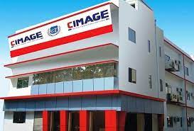
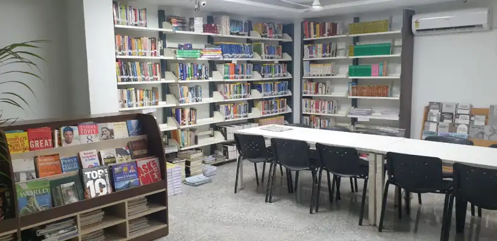

Catalyst Institute of Management and Advance Global Excellence (CIMAGE) is a part of ‘CIMAGE Group of Institutions’ run under
‘Vijayam Educational Trust‘.
It is affiliated to Patliputra University, Patna.
It is recognized as a best college in patna, Bihar for BBM, BCA & BSc.
IT Course which offers an excellent campus placement in top companies at high package.
At Catalyst Institute of Management and Advance Global Excellence (CIMAGE), Under Graduate Courses of Management and IT,
namely Bachelor of Business Management (BBM), Bachelor of Computer Application (BCA) and Bachelor of Science in Information Technology
(B.Sc.IT) are run here. Along with the main courses, students will get an add-on course which makes them
fully prepared to get selected in campus placement.
CIMAGE College Building is designed with world class infrastructure & equipped with all the modern and Hi-tech facilities.
All the Classrooms are fully Air-Conditioned and Specious.
All the classrooms are equipped with Over Head Projectors, Sound Systems, Microphones, Podium and Ergonomic Chairs.
‘Catalyst Institute of Management & Advance Global Excellence (CIMAGE) is situated at Boring Road, Patna.
It is presently serving as the ‘Head Office’ for all the branches, working under CIMAGE Group of Institutions.
CIMAGE Group of Institution has been designed to create an ideal ambience for
world class learning and campus placement.
The state of the art Classrooms and laboratories contribute to the longer period of
retention of education imparted in the center.
Our trainees have access to CIMAGE and voluminous libraries, which house latest books,
reference materials and magazines.
Computer based tutorials on various subjects are also available for self study. Its
infrastructure and Study environment
makes it best IT & Management College in Patna, Bihar.
Seminars/Presentations/GD by students is held at regular intervals to simulate real life situation.
Hi-Tech Classrooms
It has 20 Hi-Tech Class Rooms with digital smart boards, interactive projection panels and
Back Lighted White Board.
All the Class Rooms are fully Air-Conditioned. Sensitive microphones,
Sound system, Computer with TFT Panels,
Voice and Video capturing facilities have been also installed.
All the classes have got very comfortable seating arrangements.

These are the Classes being taken in the classrooms by highly experienced faculties.
BCA Class
BBA Class
BBM Class
Bsc.IT Class
PGDM Class
B.Com Class
Library
The concept of the library is undergoing a metamorphosis. Beyond books and journals,
the library today has to be the repository of information which should be available to stakeholders anytime, anywhere.
CIMAGE is working towards this concept. The library at CIMAGE has more than 50,000 volumes of Books,
e-books, audio, video, documentaries, lectures etc., a high degree of digital content and access to many leading international and
national journals both regular and electronic. This library has all the facilities which makes it best IT & Management College.
CIMAGE library is a great learning resource center for our students with access to a wide range of titles by Indian and
International authors.

Among the features of the present library are:
· Over 50,000 volumes.
· International and National Journals.
· Access to over 2,000 electronic journals.
· Thousands of company profiles and data
· Digital Content
The collection has been mainly developed in the areas of, Business Management,
Communication Development, philosophy, religion, fine arts, sociolinguistics, psycholinguistics, social and
cultural anthropology, socio-economic planning and development, Third World economics, ancient and mediaeval Indian history and
culture, and modern Indian history – and these sections are considered as outstanding.
The collection of ‘back volumes’ of journals is rated high by its users.
The major housekeeping operations of the library have been computerized. Internet facilities available to library users.
Not unexpectedly, the library of the Institute is one of the finest in the region.
Its collection has been supplemented by acquiring the private collections of some eminent scholars.